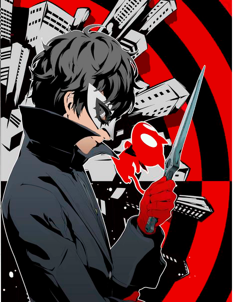
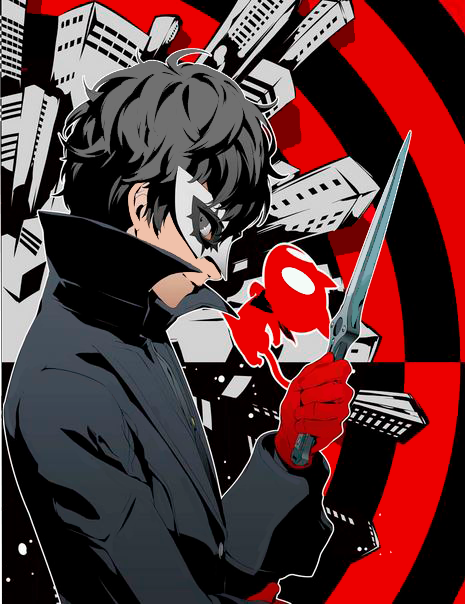

В первые же дни во сне главный герой попадает в Бархатную Комнату, где её хранитель, Игорь, объясняет парню, что ему предстоит некий курс «реабилитации», который поможет избежать таинственного разрушения.
В качестве подарка Игорь оставляет главному герою загадочное приложение Nav, которое приводит главного героя в параллельную реальность подсознания, в так называемые «Дворцы». Эти миры созданы подсознательной силой людей с сильными желаниями, которые принимают форму целой реальности. Механизм работает просто: если украсть желания — так называемое «сокровище» — из сердца хозяина такого Дворца, он поймёт свою неправоту и сознаётся в своих злодеяниях.
На следующий день, Джокеру предстоит самостоятельно добраться до школы. По дороге туда он встречает вульгарного парня по имени Рюдзи, который поливает грязью учителя физкультуры. Приложения Игоря услышало слова Рюдзи и благодаря им, парни случайно оказались во Дворце. В нём парней ловит стража и сажает в темницу.
Хозяином Дворца оказался Сугуру Камосида — учитель физкультуры, который видит себя королём школы а учеников — своими рабами и сексуальными объектами. Камосида приказал страже убить Рюдзи и протагониста, но внезапно у Джокера пробудилась персона в следствии сильного желания спасти Рюдзи.
Парни сбегают и по пути спасают непонятное существо по имени Моргана, похожее на кота. Моргана помогает Рюдзи и Джокеру успешно сбежать, и те возвращаются в реальный мир. Позже Джокер узнаёт, что Камосида действительно очень несправедливо относится к ученикам, но его поведение игнорируют из-за его высочайшего статуса как тренера по волейболу и олимпийского чемпиона, а члены команды по волейболу отрицают то, что он их избивает.